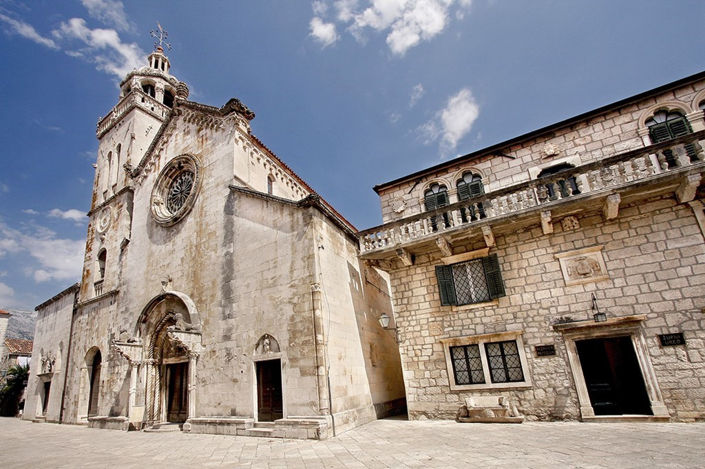
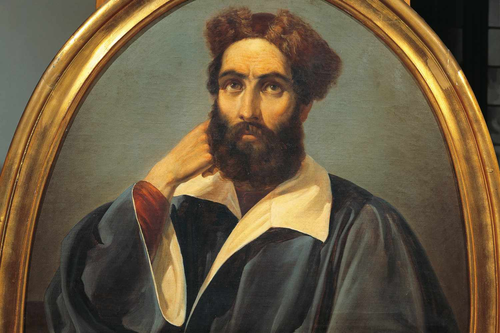
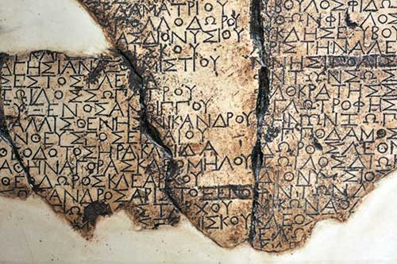
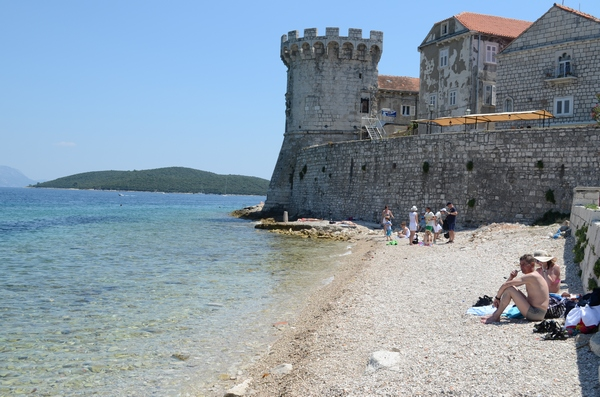
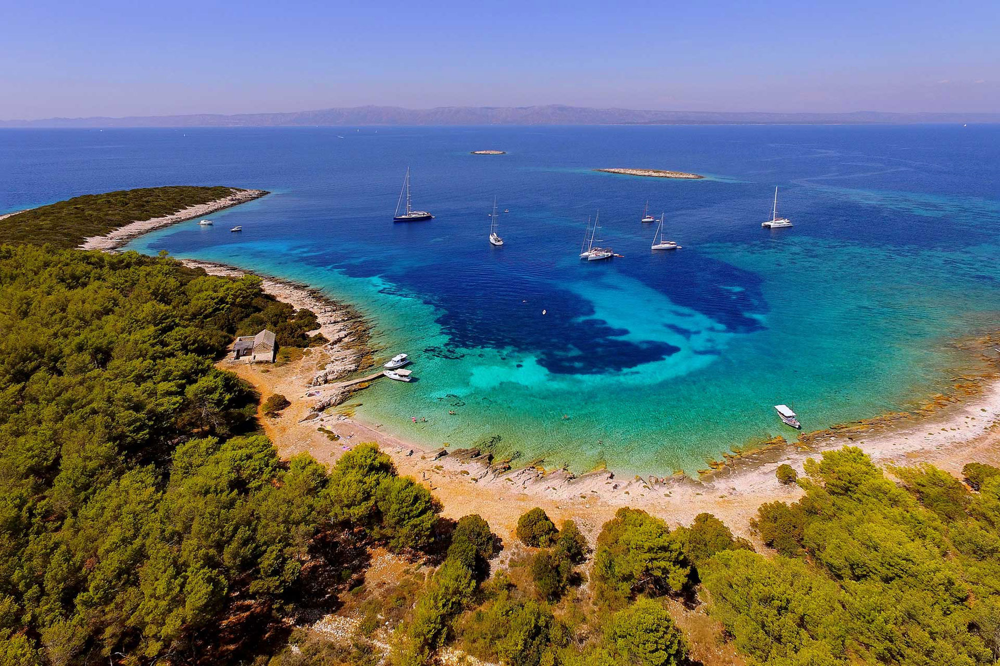
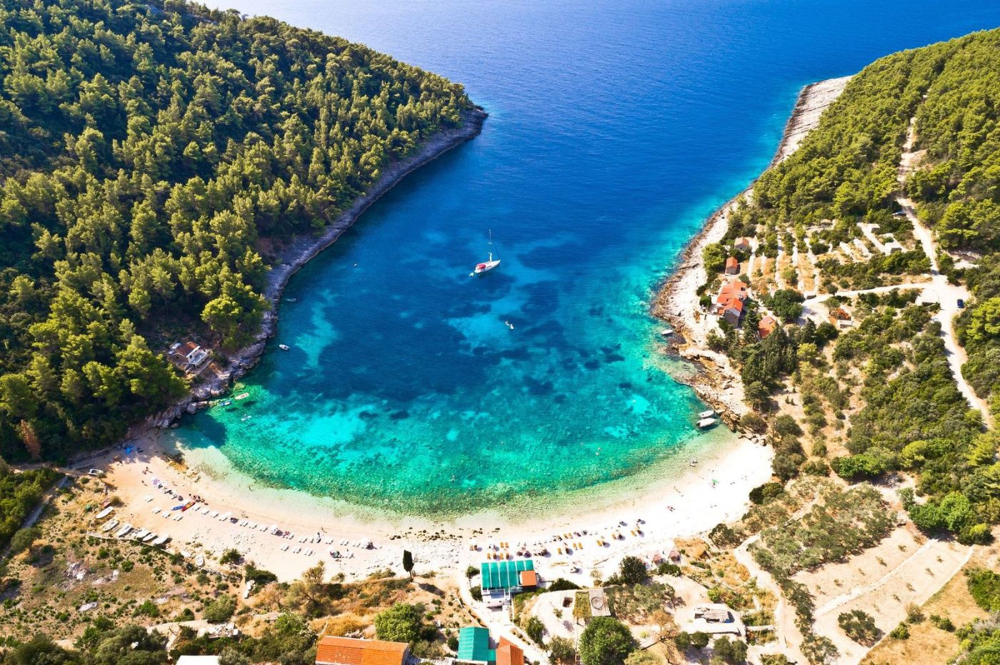
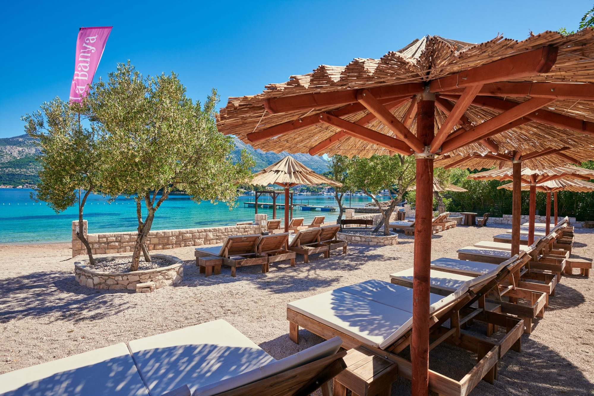

 + St. Mark's Cathedral St. Mark’s Cathedral is probably the most important building in the Korcula Old Town. It is built in Gothic-Renaissance style, completed in the 15th century at the place of other church from 13th century. It was built by local masters and craftsman of stone masonry, very well known in renaissance and baroque Dubrovnik and Venice. See all
 + House Marco Polo House of Marco Polo – believed to be house in which Marco Polo, the famous world traveller and writer was born. It’s recently bought by Korcula’s Town Authority which is currently planning to reconstruct and redone it into the Museum of Marco Polo… See all
 + Greek tablet 4th c. B.C – The psephisma from Lumbarda is a stone tablet wich describes the foundation of the Greek settlement. A copy is exhibited in the Korčula Town museum. This fragmented inscription describes, in old Greek, the agreement concluded between the Greek settlers from the island of Issa (Vis) with the local Illyrian leaders. See all
 + Towers and ramparts In 1871, some of the city walls and towers were pulled down when the War Ministry of Vienna informed the town authorities in 1863 that it would return the upkeep of the towers and town walls to the town, as they were no longer required for defence. The Town Council removed the greater part of the town walls, including three of the towers.) See all
+ St. Anthony hill From the town centre the road along the sea leads to St. Anthony's Hill (Glavica Svetoga Antuna). At the top of the hill via 101 steps, along an avenue of cypresses, there is the church of St. Anthony and a hermit's dwelling from 1420 with reliefs of St. Anthony of Padua and St. Anthony the Hermit. See all
+ Historic center The Korcula historic centre is built on a small peninsula which narrows the passage between the island and the mainland to 1270 metres. At the time, the reason for establishing the fortified town at this particular point was the obvious potential for controlling shipping along the eastern coast of the Adriatic. See all
+ Charity street The street known as Charity Street (Ulica javne dobrotvornosti) leading off the main square is the only Korčula street without steps and is therefore referred to as the Street of Thinkers. The only private street in Korčula extends to the west, opposite the church. The town prince would use it to enter the court and would descend to his private pier where the town galley was at his disposal. See all
+ Statuta Curzulae 1000 - the Venetian duke Petar II Orseolo conquered Korčula. Venetian rule is established until 1420, interspersed with periods of Croatian, Hungaro-Croatian, Zahumljan and Bosnian administration. 1214 - the issuing of the Statute of the town and island of Korčula - "Statuta et leges civitatis et insulae Curzulae"; a code setting out the life and administration of the town and the island of Korčula and the legal foundation of Korčula's autonomous commune. See all
+ Zakerjan Beach Berlin Schonefeld Airport (SXF) Berlin Tegel Airport (TXL) Bremen Airport (BRE) Cologne/Bonn Airport (CGN) See all
+ Puntin Beach Athens Airport (ATH) Chania Airport (CHQ) Corfu Airport (CFU) Heraklion Airport (HER) See all
+ Spomenik Beach Alghero Airport (AHO) Ancona Airport (AOI) Bari Airport (BRI) Bergamo Airport (BGY) See all
+ St. Nicholas Beach Faro Airport (FAO) Lisbon Airport (LIS) Madeira Airport (FNC) Porto Airport (OPO) See all
+ Hotel Liburna Beach Alicante Airport (ALC) Almeria Airport (LEI) Barcelona Airport (BCN) Bilbao Airport (BIO) See all
+ Marina Beach Lumbarda Altenrhein Airport (ACH) Basel Airport (BSL) Bern Airport (BRN) Geneva Airport (GVB) See all
+ Pupnatska Luka Beach Antalya Airport (AYT) Bodrum Airport (BJV) Dalaman Airport (DLM) Gazipasa Airport (GZP) See all
+ Žrnovska Banja Beach Aberdeen Airport (ABZ) Belfast Airport (BFS) Birmingham Airport (BHX) Bristol Airport (BRS) See all
+ Feral Athens Airport (ATH) Chania Airport (CHQ) Corfu Airport (CFU) Heraklion Airport (HER) See all
+ More Aberdeen Airport (ABZ) Belfast Airport (BFS) Birmingham Airport (BHX) Bristol Airport (BRS) See all
+ Bistro la tache Antalya Airport (AYT) Bodrum Airport (BJV) Dalaman Airport (DLM) Gazipasa Airport (GZP) See all
+ Melbourne Alicante Airport (ALC) Almeria Airport (LEI) Barcelona Airport (BCN) Bilbao Airport (BIO) See all
+ Belin Berlin Schonefeld Airport (SXF) Berlin Tegel Airport (TXL) Bremen Airport (BRE) Cologne/Bonn Airport (CGN) See all
+ Toreta Winery Berlin Schonefeld Airport (SXF) Berlin Tegel Airport (TXL) Bremen Airport (BRE) Cologne/Bonn Airport (CGN) See all
+ Didovinka Winery Athens Airport (ATH) Chania Airport (CHQ) Corfu Airport (CFU) Heraklion Airport (HER) See all
+ Black Island Winery Alghero Airport (AHO) Ancona Airport (AOI) Bari Airport (BRI) Bergamo Airport (BGY) See all
+ Tasovac Winery Faro Airport (FAO) Lisbon Airport (LIS) Madeira Airport (FNC) Porto Airport (OPO) See all
+ Bire Winery Alicante Airport (ALC) Almeria Airport (LEI) Barcelona Airport (BCN) Bilbao Airport (BIO) See all
+ Popić Vinery Altenrhein Airport (ACH) Basel Airport (BSL) Bern Airport (BRN) Geneva Airport (GVB) See all
+ Vitis Winery Antalya Airport (AYT) Bodrum Airport (BJV) Dalaman Airport (DLM) Gazipasa Airport (GZP) See all
+ Grošić Winery Aberdeen Airport (ABZ) Belfast Airport (BFS) Birmingham Airport (BHX) Bristol Airport (BRS) See all
 + Proizd Island Stunning beauty, untouched nature, a breath-taking turquoise sea, only partially describes what this island of irresistible charm has to offer. In 2007, Proizd island was named the beach of the year on the Croatian Adriatic and every year it is ranked among the top tourist destinations according to the world's most renowned magazines and travel websites, such as The New York Times, Daily Telegraph and Trip Advisor. This small piece of heaven is only half an hour away by taxi boat from the town centre, and once you visit this island of turquoise sea and beneficial healing energy, you will become infused with the desire to return. Proizd island boasts four beautiful pebble beaches accessible by romantic paths surrounded by a pine forest. See all
+ Vela Przina Beach Vela Przina is the largest and best-known sandy beach in Lumbarda and one of the most popular on the whole Korcula Island and beyond. Facing the south, this beach is one of the sunniest and driest places on the Island too. The eastern end of the half-kilometer-long sandy beach is the quietest while the west end is popular with families and visitors. The beach overlooks the Lastovo Channel and offers unrestricted views over the sea and horizon. See all
 + Pupnatska Luka Beach A beautiful pebble beach with clear water in the bay of Pupnatska Luka is situated some 15 km away from Korcula Town. This is one of many picturesque beaches on the island offering spectacular views across the channel to Lastovo and beyond. It is a small, easily-accessible beach on the south coast, with clear swimming waters and gently sloping pebbles shingle, making it an ideal beach to enjoy swimming and sunbathing. See all
 + La Banya As the Adriatic Sea whispers on the shore, experience mouth-watering aromas from the spectacular open kitchen and enjoy a light lunch or a quiet romantic dinner for two. Authentic ingredients bursting with flavor and modern culinary techniques make La'Banya the perfect choice for discerning diners seeking delightful dishes in chic surroundings with a breathtaking sea view. See all